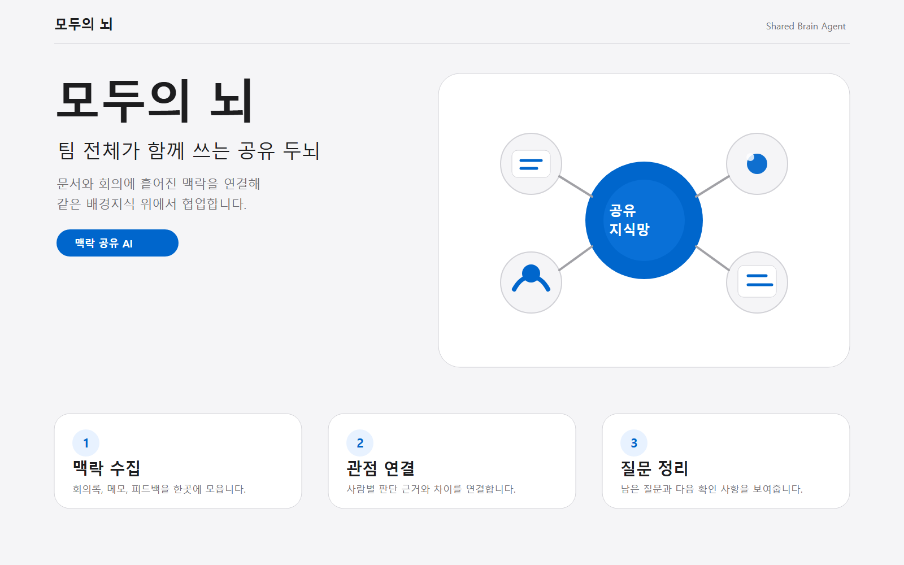

모두의 뇌
여러 분야가 함께 움직이는 프로젝트에서 흩어진 맥락을 연결해, 팀 전체가 같은 배경지식 위에서 협업하도록 돕는 AI 에이전트 기획입니다.

문제
서로 다른 전공과 역할이 같은 회의를 해도 배경 맥락을 다르게 이해합니다.
AI 역할
주제, 용어, 결정 배경, 관점 차이, 미결 질문을 추출합니다.
결과
공유 지식맵과 온보딩 요약으로 반복 설명과 재작업을 줄입니다.